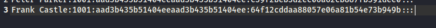

64f12cddaa88057e06a81b54e73b949b
copying this end of the hash of fcastle


so for the punisher we got '+' sin whihc means that the attack might have worked out for us
Like it is indication that high ppoosiblty it has worked out
if u get Pawned written then thats surety that it has definitely worked out
local admin acc are very very imp

135 was thepunisher
139 wass thepunisher2
so on 135 it actually trie dbt wasnt able to go ahead
bt it ddnt even start on 139 wala machine
this method is useful to own a domain controller